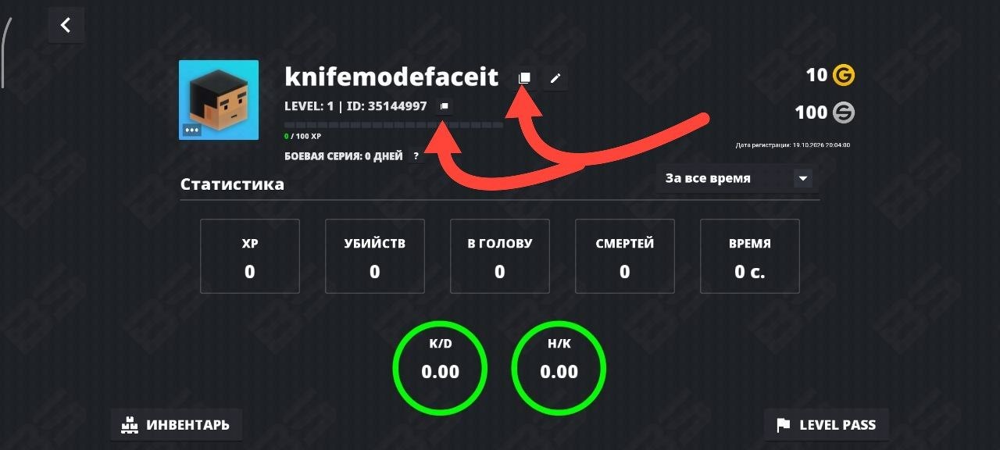
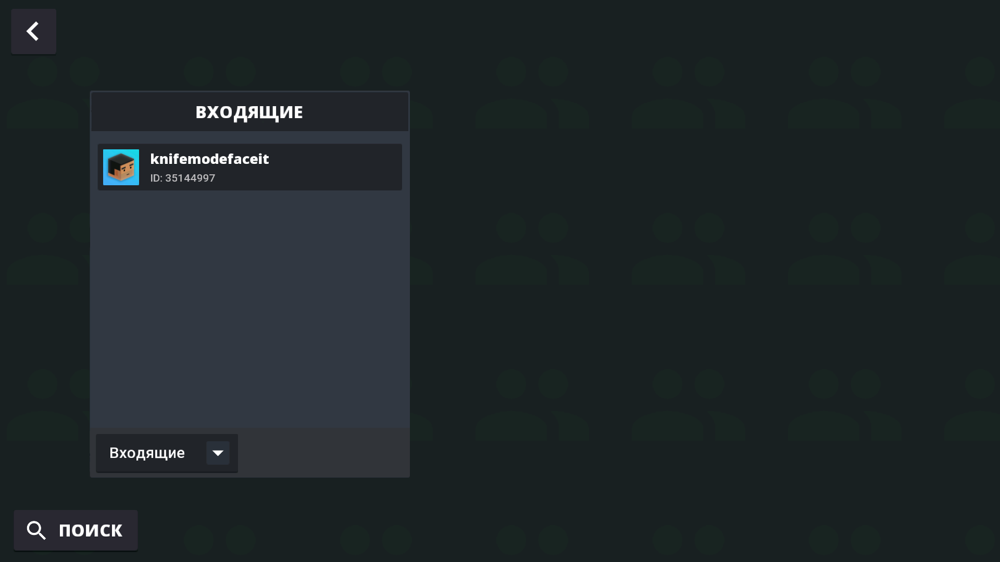
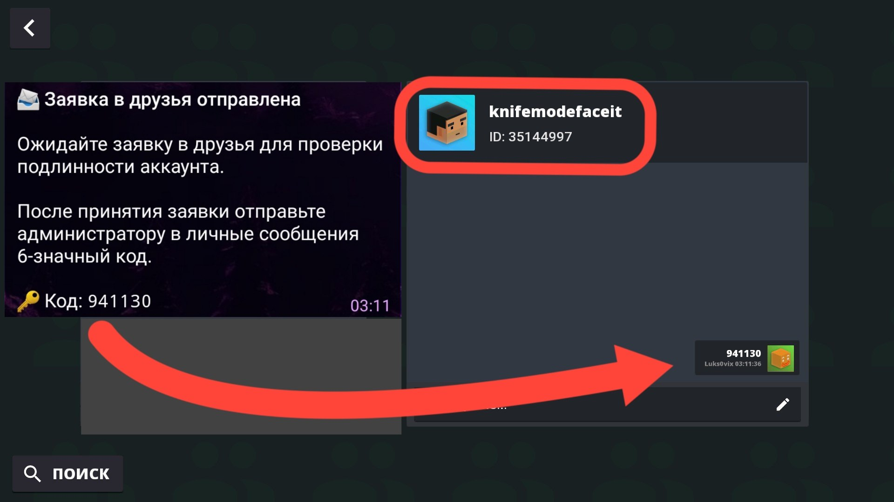
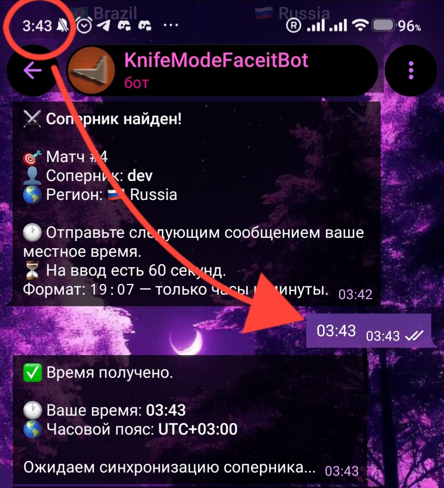
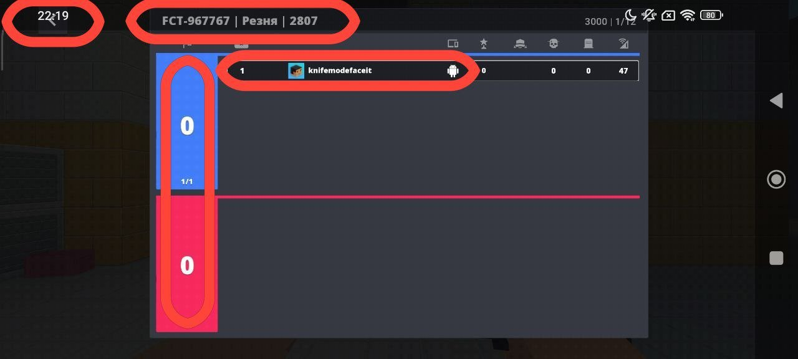
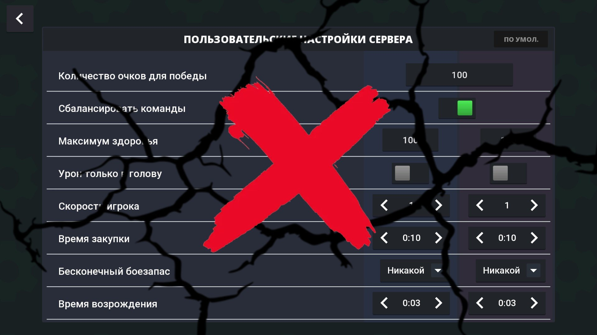
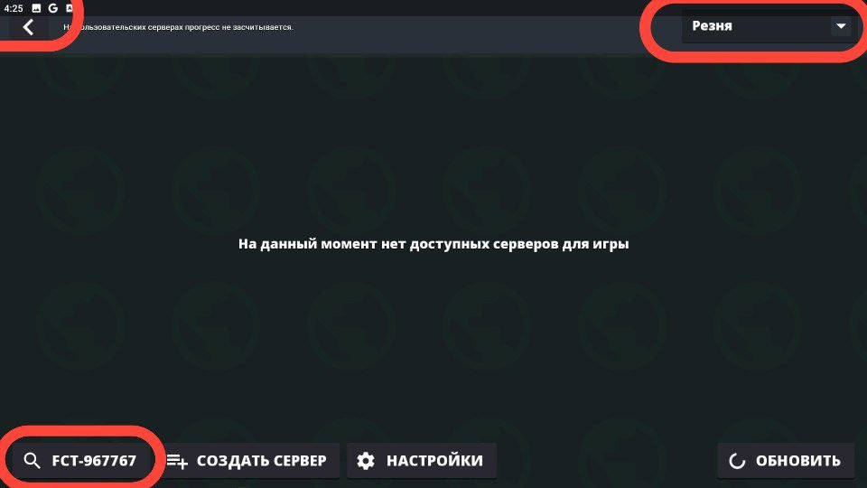
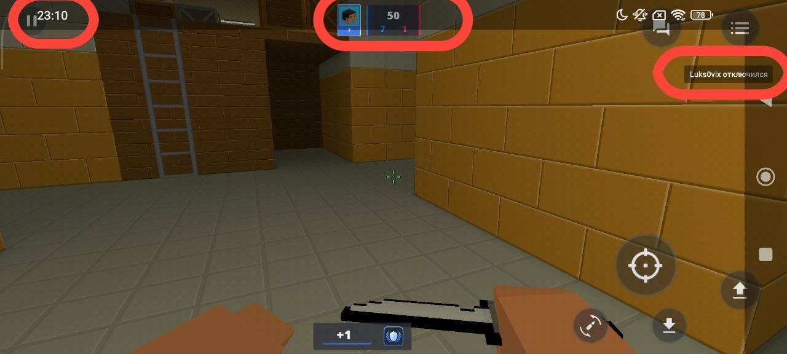
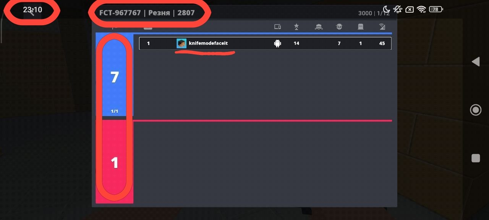
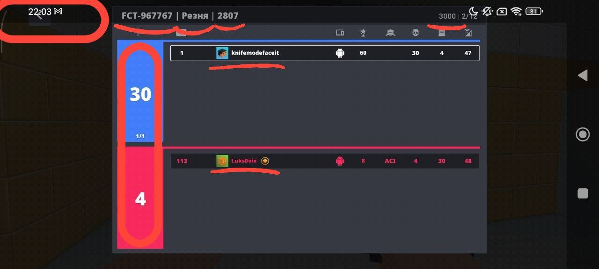

01. Начало регистрации
Открой Telegram-бота FACEIT, нажми «Регистрация» и следуй инструкциям. Тебе потребуется указать игровой никнейм и Block Strike ID.
Площадка для честных ножевых дуэлей. Изучай правила, находи соперников и подтверждай каждый результат.
Указание игровых данных и проверка аккаунта.
02 / RULEBOOKЗапрещённые модификации и честная игра.
03 / MATCH FLOWОт поиска соперника до финального счёта.
04 / PROOFСкриншоты результатов и подача жалоб.
Чтобы участвовать в дуэлях FACEIT, зарегистрируйся через Telegram-бота и подтверди свой игровой аккаунт.
Открой Telegram-бота FACEIT, нажми «Регистрация» и следуй инструкциям. Тебе потребуется указать игровой никнейм и Block Strike ID.
Никнейм и ID должны полностью совпадать с данными твоего текущего аккаунта в Block Strike. Проверь их перед отправкой.
Если данные не совпадают, на тебя могут подать жалобу. При подтверждении нарушения администрация может применить наказание.

После отправки данных администратор проверит твой ID и отправит заявку в друзья в Block Strike. Дождись уведомления от Telegram-бота.
Открой Block Strike, найди входящую заявку от администратора FACEIT и прими её.

После того как администратор отметит отправку заявки в боте, в Telegram тебе придёт шестизначный код.
Отправь этот код в личные сообщения администратору непосредственно в Block Strike.
35144997
Перед отправкой проверь, что открыл профиль именно с этим ID.

После проверки администратор подтвердит регистрацию. До подтверждения поиск дуэлей может быть недоступен.
Если заявка не пришла, код не принимается или проверка затянулась, проверь правильность ID и обратись к администрации FACEIT.
В профиле отображаются:
Если ты изменил никнейм или игровой аккаунт, обнови данные в FACEIT. Изменение никнейма может быть ограничено периодом ожидания, а смена Block Strike ID может потребовать повторной проверки.
Перед первой игрой обязательно ознакомься со всеми правилами.
FACEIT — система рейтинговых дуэлей в Block Strike. Формат матча — 1 на 1. Каждый игрок обязан соблюдать правила честной игры.
Администрация проверяет доказательства, рассматривает жалобы и подтверждает результаты матчей. Администраторы могут свободно заходить на серверы дуэлей в качестве наблюдателей, следить за ходом матчей и применять предусмотренные правилами наказания на основании собственных наблюдений.
Запрещены читы и любые модификации, дающие нечестное преимущество. Используй собственный Telegram-аккаунт и свой Block Strike ID. Запрещено использовать чужие аккаунты для обхода правил и рейтинга.
Запрещены поддельные доказательства, подмена времени и намеренный выход из матча ради избежания поражения. Нельзя намеренно мешать проведению дуэли или работе системы.
Дуэль проводится по всей карте. Игроки могут свободно перемещаться по локации и атаковать соперника в любой её части, в том числе возле его спавна. Зажим спавна разрешён.
Отход от соперника, отступление для защиты и смена позиции разрешены, если они являются частью игрового процесса. Само по себе отступление не считается нарушением.
Намеренное затягивание дуэли строго запрещено. Нельзя просто убегать от соперника по всей карте, постоянно избегать боя и намеренно мешать завершению матча.
Если заметил такое поведение, сразу включи видеозапись, зафиксируй происходящее и подай жалобу администрации, приложив запись. Администрация оценивает ситуацию целиком: тактическое отступление или смена позиции сами по себе не являются нарушением.
Для поиска дуэли открой Telegram-бота, выбери регион Brazil или Russia и дождись автоматического подбора соперника. Карта случайно выбирается из списка Casta или 3000, а Host назначается системой.
После нахождения соперника оба игрока должны пройти синхронизацию времени. Укажи своё местное время в запрошенном формате. Бот определяет официальное время начала матча. Если синхронизация не завершена в установленный срок, матч отменяется без изменения рейтинга.

Официальным считается время начала, установленное ботом. Host обязан создать комнату с указанными названием и паролем именно к этому времени. До официального начала создавать комнату нельзя.
Сразу после создания комнаты Host обязан сделать скриншот. На нём должны быть видны время, название комнаты и информация, позволяющая подтвердить создание нужного сервера. Сохрани этот скриншот до завершения матча: он доказывает, что комната была создана вовремя.
Второй игрок должен подключиться к указанной комнате.

Использовать пользовательские настройки сервера строго запрещено. Матч должен проходить на обычном сервере со стандартными настройками режима.
Перед началом дуэли проверь, что сервер не использует пользовательские настройки. Если заметил неправильные настройки, не продолжай матч как обычно: сообщи администрации и приложи доказательства. Администрация может проверить сервер и решить, что делать дальше.

После подключения обоих игроков начинается дуэль. Победа определяется достижением 30 очков. Максимальная продолжительность матча — 30 минут с официального времени начала.
Запрещено намеренно покидать матч, чтобы избежать поражения или повлиять на результат. Игроки обязаны соблюдать правила и при присутствии администратора-наблюдателя.
Если через 5 минут после официального начала соперник не подключился к комнате Host, Host может подать жалобу «Игрок не явился».
Для доказательства нужны два скриншота: первоначальный — сразу после создания комнаты, и второй — спустя 5 минут после начала матча. На втором также должны быть видны время и информация, подтверждающая, что соперник не подключился. Приложи оба скриншота к жалобе.
Если через 5 минут после официального начала Host не создал указанную комнату, второй игрок может подать жалобу «Сервер не был создан».
На скриншоте одновременно должны быть видны время, выбранный режим «Резня» в Block Strike и поиск серверов, в котором отсутствует нужная комната. Изображение должно подтверждать, что ты искал именно нужный сервер.

После завершения дуэли каждый игрок обязан отправить скриншот итогового результата через Telegram-бота. На нём должны быть видны счёт, участники матча и информация, необходимая для проверки.
Если дуэль завершилась обычным образом, отправь скриншот итогового результата. На нём должны быть видны счёт и участники матча.
Если соперник вышел до окончания дуэли, необходимо сделать два скриншота. Сначала зафиксируй момент выхода соперника: на первом скриншоте должны быть видны время, счёт и информация о том, что соперник отключился. Затем в то же время, не меняя ситуацию и не дожидаясь другого момента, сделай второй скриншот с информацией комнаты и тем же временем, на котором видно отсутствие соперника. Отправь оба скриншота вместе с жалобой, чтобы администрация могла сопоставить доказательства.



После подтверждения результата рейтинг игроков обновляется по установленной системе. Подтверждённые результаты сохраняются в статистике. Администрация не должна изменять рейтинг без основания.
Жалобу можно подать на конкретный матч или другого игрока. Опиши ситуацию и приложи относящиеся к делу доказательства. Администрация рассматривает жалобу на основании доказательств и собственных наблюдений, а при необходимости может запросить дополнительные материалы.
Заведомо ложные жалобы и поддельные доказательства запрещены.
Запрещены читы, чужие аккаунты для получения преимущества, подделка скриншотов и времени, пользовательские настройки сервера, выдача пользовательского сервера за обычный, использование ошибок системы для получения преимущества, обход ограничений FACEIT и намеренное нарушение проведения дуэли.
В зависимости от нарушения администрация может отменить матч, засчитать результат на основании доказательств, выдать временный или постоянный бан либо удалить игрока из FACEIT. Наказание может основываться на лично наблюдавшемся нарушении и должно учитывать обстоятельства ситуации.
Игрок обязан ознакомиться с правилами до начала участия и самостоятельно сохранять необходимые доказательства. Незнание правил не освобождает от ответственности.
Администрация должна руководствоваться правилами, доказательствами и обстоятельствами матча. Административные полномочия запрещено использовать для получения необоснованного преимущества или личной выгоды.
Администрация может изменять и дополнять правила. Изменения публикуются для игроков и применяются согласно объявленным условиям вступления в силу.
Участвуя в FACEIT / «Дуэлях», игрок соглашается соблюдать установленные правила. Полный список правил и обязательная информация также находятся в Telegram-канале @KnifeModeFaceit.
Открой Telegram-бота и выбери поиск дуэли.
Отправь местное время в формате ЧЧ:ММ, следуя подсказкам бота.
Проверь карту, название комнаты, пароль и свою роль Host.
Сыграй матч и отправь скриншот результата через бота.
На доказательстве должны быть видны счёт и участники матча.
После установленного времени ожидания приложи скриншот, подтверждающий ситуацию.
Опиши проблему, выбери подходящую причину и приложи доказательство.